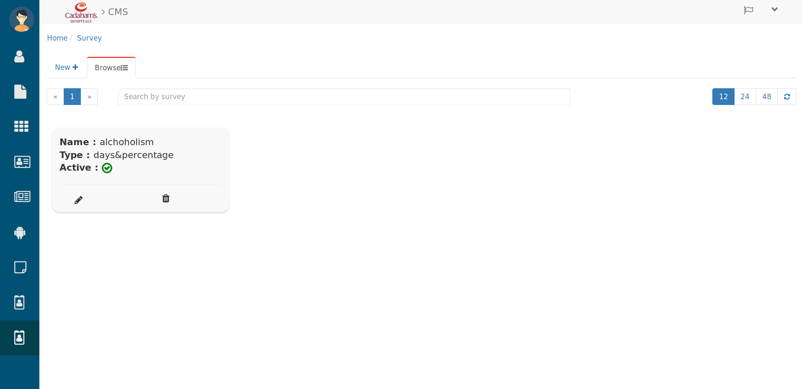
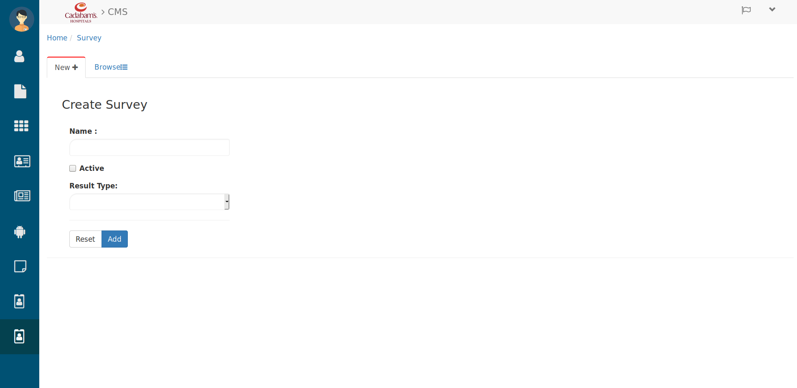
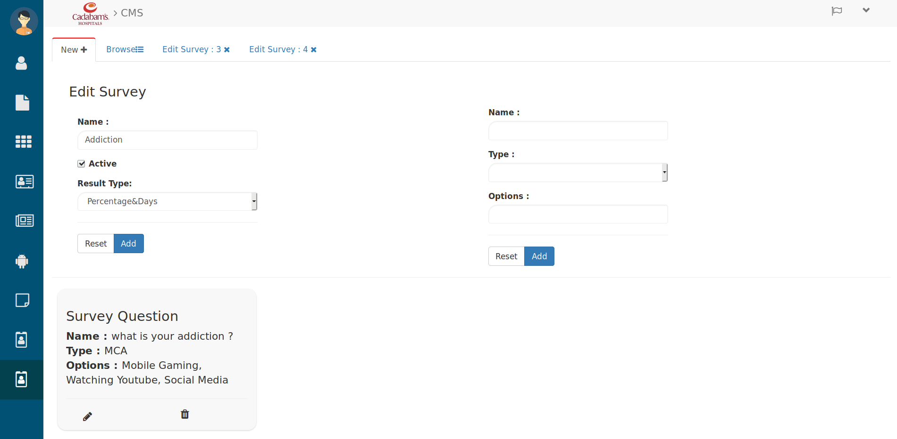
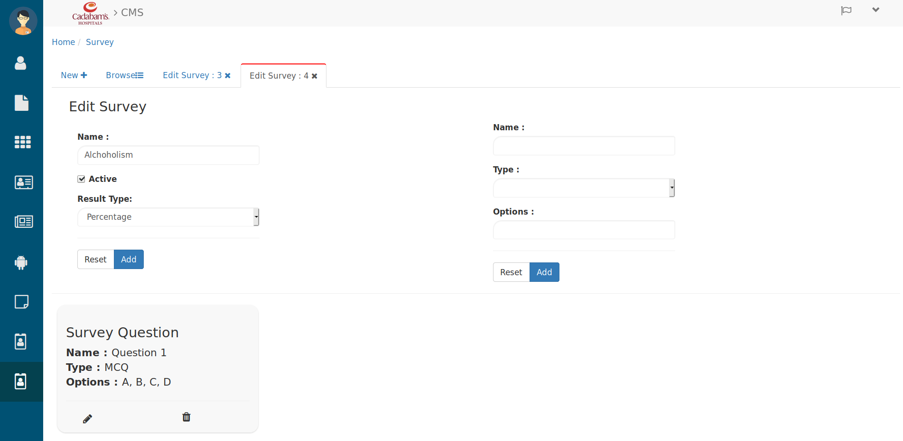

Survey¶
Let’s come to survey window to mange it for your website and blogs. for that click on survey icon from menu side bar. then you will see below tab
Browsing Survey¶

Surveys
Here you can see all the created survey for your website and on those survey you can see the Name, Type and Status of survey
- Search the Survey in search bar by entering their Title/Name.
- Use the page and refresh button to Browse Survey.
- To create a new Survey click on New+ then you will see below tab.
Creating Survey¶

Creating Survey
Here
- Enter the Name of survey.
- Check the Active checkbox to make it active else uncheck.
- Below that select the Result Type for e.g. Percentage, Days, Lead or Percentage&Days .
- Then click on Add button to add the questions of survey in below tab in right side,

Adding Questions in survey
Here
- In Name text-field write the Question and below that
- Select the question Type from drop-down for e.g. MCQ,MCA,Text
- Below that give the options for that question separating by (,) comma.
- Then click on Add button and question will be added in this survey.
- To edit the question click on that question’s Edit(pencil) icon and
- To delete them click on their delete button and for confirmation click on yes so that question will be deleted else click on No
- To check the created survey you can go to Browsing Survey and by refreshing that tab you will see the created survey.
- To Edit the survey click on that survey’s pencil(Edit) icon then you will see the below tab.
Editing Survey¶

Editing Survey
Here you can Edit the survey’s whole details as you have created in Creating Survey only the difference is the fields are already filled.